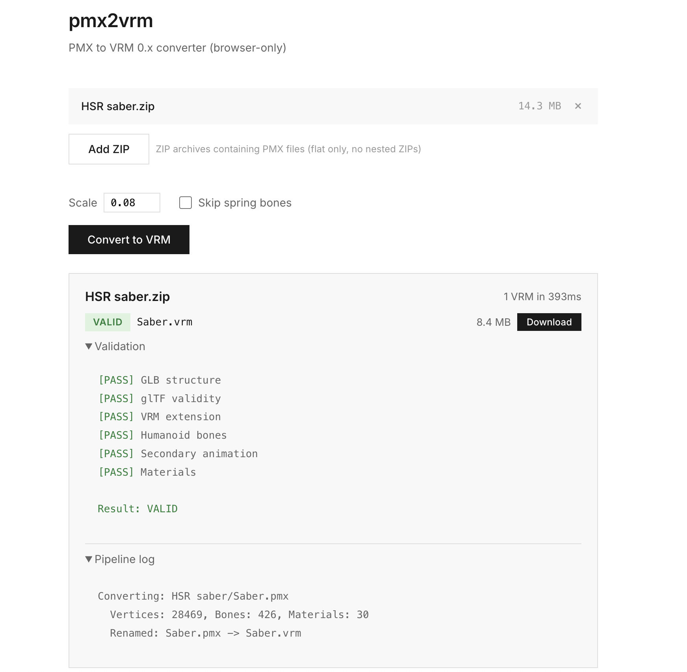

PMX to VRM Pipeline
Drop a ZIP, get a UE-ready VRM
Python · TypeScript · glTF 2.0 — Company, 2026
Problem
We needed to bring PMX characters from Booth/community into the project, but there was no way to convert PMX to UE-compatible VRM. Manual conversion broke bone mappings, lost physics on hair/skirts, and corrupted textures, completely changing the look. The MMD Player was built as a source verifier for this pipeline.
Solution
An automated PMX to glTF to VRM conversion pipeline. Drop in a ZIP, get a UE-ready VRM out. The key requirement was preserving physics (hair, skirt, ribbon) and material look without breaking them.
Pipeline Flow
ZIP → PMX Parse → glTF Build → VRM Output| Tool | User | Method |
|---|---|---|
| Python CLI | TA / Batch jobs | Batch-convert multiple models at once |
| Next.js Web App | Anyone on the team | Upload ZIP in browser, download VRM |
| Browser SPA | External / No server | Client-only conversion |

Web app — ZIP in, VRM out
Result
| Category | Result |
|---|---|
| Conversion Rate | 90% success on major game PMX (HoYoverse, Eternal Return, Cyphers, etc.) |
| Model Coverage | Both Japanese and Chinese PMX supported |
| Conversion Speed | 393ms (Saber.pmx, 28K vertices) |

Left: Original game screenshot — Right: Viewer rendering after PMX to VRM conversion